Bleak Forest
Order of Play
© Johnathan L. Bingham & Ostensible Cat Design
Danger Die
The Danger Die measures the threats that find you as you travel. Roll it each time you enter a new sub-hex.
Building the pool. Start with 1d6 and add the terrain's Danger modifier (Terrain table). Then apply:
- +1 die each for night, Fog, At Risk, entering a sub-hex during an active pursuit, and resting without a guard.
- −1 die each for Downpour, High Winds, and each Wiles: Evasion Focus rank.
- The pool is never fewer than 1d6 or more than 4d6. Bleak Forest terrain starts at 4d6, so nothing raises it further.
The Wyrd die. One die in the pool is a different colour. If it shows 1, a Special Event occurs instead of any other result. The pool's size sets its tier: 1d6 Minor, 2d6 Moderate, 3d6 or 4d6 Major. The chance is 1 in 6 at every pool size.
Reading the result. If the Wyrd die does not show 1, sum all dice.
| Sum | Result | 1d6 | 2d6 | 3d6 | 4d6 |
|---|---|---|---|---|---|
| Wyrd die 1 | Special Event (tier by pool) | 16.7% | 16.7% | 16.7% | 16.7% |
| 2–5 | No encounter: roll on the Still Watch table, +1 per consecutive Still Watch | 66.7% | 16.7% | 1.9% | 0.1% |
| 6–9 | Common Encounter | 16.7% | 50.0% | 23.6% | 5.3% |
| 10–12 | Uncommon Encounter | — | 16.7% | 32.4% | 17.7% |
| 13+ | Rare Encounter | — | — | 25.5% | 60.2% |
At Risk. At Risk adds 1 die to the pool for as long as its trigger lasts. Several triggers at once still add only 1 die. Triggers:
- Travelling without light in the Bleak Forest or other darkness.
- Being Immobile from a full inventory or exceeding your Fatigue Ceiling.
- Suffering a Severe or Extreme Condition.
Resting without a guard. Outside the Dead and Bleak Forest, you may rest without setting a guard. If you do, add 1 die and roll the pool each Mark instead of once. In the Dead and Bleak Forest you cannot rest without a guard.
Encounter Tables
When the Danger Die shows a Common result (6–9), roll 1d6 to pick the column: on 1–3 use Common Encounter I, on 4–6 use Common Encounter II. Then roll 1d20 on that column to see which creature you meet.
When the Danger Die shows an Uncommon result (10–12), roll 1d20 on the Uncommon Encounter column.
Rare results (13+) and Special Events (a 1 on the Wyrd die) use their own tables.
Example: your pool of 2d6 totals 8, a Common encounter. You roll a 5 on the d6, so you use Common Encounter II. A 12 on the d20 gives you a Ghoul.
Common and Uncommon Encounters (roll d20)
| Die Roll (1d20) | Common Encounter (d6: 1–3) |
Common Encounter II (d6: 4–6) |
Uncommon Encounter |
|---|---|---|---|
| 1 | Animal, Small (Cat) | Fae (Brownie) | Animal, Large (Dire Wolf) |
| 2 | Animal, Small (Fox) | Fae (Changeling) | Animal, Large (Giant Boar) |
| 3 | Animal, Small (Owl) | Fae (Dwarf) | Animal, Large (Sabretooth Cat) |
| 4 | Animal, Small (Raven) | Fae (Elf) | Animal, Huge (Cave Bear) |
| 5 | Animal, Small (Serpent) | Fae (Fairy) | Demon (Cambion) |
| 6 | Animal, Small (Toad) | Fae (Goblin) | Demon (Hellhound) |
| 7 | Animal, Medium (Boar) | Harpy | Elemental (Gnome) |
| 8 | Animal, Medium (Large Bat) | Lambent Moth | Elemental (Salamander) |
| 9 | Animal, Medium (Large Cat) | Wildings | Elemental (Sylph) |
| 10 | Animal, Medium (Large Centipede) | Apparition | Elemental (Undine) |
| 11 | Animal, Medium (Giant Rat) | Draugr | Fae (Barghest) |
| 12 | Animal, Medium (Giant Spider) | Ghoul | Fae (Sidhe Cat) |
| 13 | Animal, Medium (Wolf) | Skeleton | Abomination Ape |
| 14 | Animal, Large (Black Bear) | Zombie | Bleak hound |
| 15 | Animal, Large (Brown Bear) | Boggart | Hag |
| 16 | Animal, Large (Insect Swarm) | Ratling | Moth Folk |
| 17 | Animal, Large (Giant Frog) | Berserker | Troll |
| 18 | Animal, Large (Giant Snake) | Carrion Crowe | Warg |
| 19 | Animal, Huge (Giant Beetle) | Dark Walker | Shade |
| 20 | Demon (Imp) | Fungal Folk | Wight |
Rare Encounters (roll d20)
Rare encounters are not simply combat threats — they are events, each one significant enough to shape the arc of a session. Roll 1d20. These beings do not exist merely to be fought; approaching them with steel drawn is almost always the wrong choice. Each entry includes the nature of the encounter and the question it poses.
| Die Roll (1d20) | Encounter | Notes |
|---|---|---|
| 1 | Dragon (Young) | Quest: It has collected something from a dead traveller — a letter, a name, a sealed vial. It does not understand what it has. If you can prove it has value, it will trade. Make it earn you passage; the alternative is straightforward and one-sided. |
| 2 | Demon (Greater) | Challenge: It is not hunting you — but it has noticed you. It will make one offer. The offer sounds reasonable. Refusing costs something. Accepting costs more. There is no option to simply walk away once it has spoken. |
| 3 | Lych | Lore: Occupied with a ritual you can attempt to decipher (Wits check Challenging 19 or Occultism Difficult 16). Interrupting means immediate destruction. Success reveals something significant — a True Name, a sealed location, a forgotten history. It will not notice you if you do not disturb the circle. |
| 4 | Hag Coven (Three) | Quest: They have a task only the living can complete. They will offer one genuine, unambiguous favour in return. The task will involve a place you should not go, a person you should not disturb, or a thing you should not touch. The favour is real. They do not cheat — but they do interpret narrowly. |
| 5 | Elemental (Elder) | Challenge: The elder elemental has a grievance. Something was taken from it or violated its domain. It does not speak in words. A Wits check (Challenging 19) or Occultism check (Difficult 16) to understand what it wants. Resolve the grievance to pass safely. Ignore it and the terrain itself becomes hostile for 1d3 watches. |
| 6-7 | The Wild Hunt | Challenge: Roll 1d6. 1–4: The Hunt passes — quarry is elsewhere, you may observe. 5–6: The quarry is near you and the Hunt will reach it in 1d3 rounds. You may assist (binding you to the Hunt’s debt), impede (making you the new quarry), or flee (see Pursuit and Evasion). |
| 8-9 | Fae Lord (Sidhe Noble) | Quest: The Fae Lord has noticed you and will not be unnoticed in return. It demands a service, a wager, or a secret — your choice. It will accept terms if they are sufficiently interesting. Breaking your word invokes a permanent consequence of the Lord’s choosing. Dealing fairly earns a specific, binding favour. |
| 10 | Bleak Leviathan | Lore: Too vast to fight. It passes through the hex like weather. In its wake, something has changed — a path is open that was not, or closed that was. Something is left behind. A Wits check (Average 13) to find it before the Forest reclaims it. |
| 11-12 | Revenant (Named Dead) | Quest: Roll 1d6. 1–3: It is hunting you — for something you did or someone you are. 4–6: Someone from your past. Either way, it will tell you why if you ask before it moves. The information may change whether you run or stand. It remembers everything. |
| 13-14 | Wyvern | Challenge: Territorial but not mindless. A Wits or Guile check (Difficult 16) to redirect its attention before it commits. Success: it marks this hex as claimed and leaves — this location is safe from Wyverns once. Fail: it attacks from altitude with Moderate Advantage on its first strike. |
| 15-16 | Forest Giant | Quest/Lore: It has something — a body it found, a carved object, a trapped creature it does not know what to do with. It will trade for food or something impressive. It will answer one direct question about the terrain it patrols if given tribute (at least 1sp in food or valuables). It does not lie. It is not subtle. |
| 17-18 | Draconic Worm | Challenge: Subterranean tremors precede it (Wits check Average 13 to detect). On success, choose: flee (see Pursuit and Evasion); lure it away from the path (Survival Difficult 16, costs 1 watch); or collapse its tunnel (1 Uncommon component + Wits Difficult 16 — seals the path behind you permanently). |
| 19 | Wyrd Sister (Wandering) | Lore/Challenge: She carries a thread. It connects to something in your past that you have not thought about in a long time. She will not speak first. If you speak to her, she answers one question with absolute truth — then asks one in return. Your answer becomes part of the pattern. She will not tell you what it means. |
| 20 | The Forest Itself | Challenge: The Forest exercises its will. Trees shift, paths close, the hex reshapes over 1d3 watches. Survival check (Difficult 16) per watch to hold orientation. Three failures: displaced to a random adjacent hex. Success: find a landmark not on any map — something the Forest wants you to see. |
Special Events
Minor Special Event
| Die Roll | Event | Description |
|---|---|---|
| 1 | Wanderer (Smith/Trader) | Up to Common Items |
| 2 | Magic Spring | All saves are at Moderate (roll d6) Advantage (1-3) disadvantage (4-6) for the next hour |
| 3 | Loot Cache 1 | Roll 1d3 times on the Loot I table |
| 4 | Alchemist/Bandits | Roll 1d6: 1–3: Wandering Alchemist (see The Alchemist below); 4–6: Bandits. |
| 5 | Glimpse | See into the next Sub Hex |
| 6 | Sisters’ Omen | If any Challenge or Ordeal is Prepared, it begins (timing per its Omen). Otherwise, reveal the type of its next missing Fragment. |
Moderate Special Event
| Die Roll | Wanderer (Smith/Alchemist/Trader) | Description |
|---|---|---|
| 1 | Wanderer (Smith/Trader) | Up to Uncommon Items |
| 2 | Magic Fountain | All saves are at Major (roll d6) Advantage (1-3) disadvantage (4-6) for the next hour. This hex remain on the map during a recursion |
| 3 | Loot Cache 2 | Roll 1d3 on Loot I and 1d2 II tables |
| 4 | Alchemist/Brigands | Roll 1d6: 1–3: Wandering Alchemist (see the Alchemist below); 4–6: Brigands. |
| 5 | Oracle | See into the surrounding 6 hexes |
| 6 | Sisters’ Omen (Strong) | If any Challenge or Ordeal is Prepared, it begins (timing per its Omen). Otherwise, reveal the type of its next missing Fragment. |
Major Special Event
| Die Roll | Event | Description |
|---|---|---|
| 1 | Wanderer (Smith/Trader) | Up to rare items |
| 2 | Obelisk | All saves are at Extreme (roll d6) Advantage (1-3) disadvantage (4-6) for the next hour. This hex and surrounding six hexes remain on the map during a recursion. |
| 3 | Loot Cache 3 | Roll 1d3 on Loot I, 1d2 on Loot II, and once on Loot III tables |
| 4 | Alchemist/Wild Hunt | Roll 1d6: 1–3: Master Alchemist (see The Alchemist below); 4–6: Wild Hunt. |
| 5 | Portal | You can traverse the portal to any hex that is revealed. |
| 6 | Sisters’ Warning | If any Challenge or Ordeal is Prepared, it begins (timing per its Omen). Otherwise, reveal the type of its next missing Fragment. |
Still Watch
When the Danger Die shows no encounter (a sum of 2–5), roll 1d6 on this table. Add +1 for each Still Watch in a row before this one. The count resets after any encounter or Special Event.
| d6 + count | Still Watch |
|---|---|
| 1 | True quiet. Nothing stirs. Your next Recovery or rest in this sub-hex restores 1 extra Vitality. |
| 2 | Old passage. Tracks, a cold firepit or a dropped tool. Gain Moderate Advantage on your next Explore or tracking check in this sub-hex. |
| 3 | Shifting sky. The weather turns early. Reroll weather now; the result lasts for the rest of this Watch and the next. |
| 4 | Distant sound. Bells, voices or something large moving away. Note it; nothing comes of it yet. |
| 5 | Watched. You feel eyes on you, but find nothing. Your next Danger Die roll adds 1 die. |
| 6 | Sign of the pattern. A shape in the bark, a thread caught on a thorn. If any Challenge or Ordeal is not yet Prepared, learn the type of its next missing Fragment. |
| 7 | Too still. Birds fall silent and the wind drops. Your next Danger Die roll adds 1 die, and a result of 6–9 is treated as Uncommon. |
| 8+ | The silence breaks. Something has been waiting. Roll on the Uncommon Encounter table; it has surprise unless you win an opposed Anima check. Reset the count. |
The Alchemist (Wanderer)
A travelling dealer in reagents and brews who walks the forest roads with a laden pack or a small cart. Roll disposition normally, but treat Hostile as Wary: the Alchemist avoids fights and leaves rather than attacks.
Stock comes from the Special Event tier:
| Tier | Title | Components for sale | Alchemical items |
|---|---|---|---|
| Minor | Wandering Alchemist | Common, 1d6 types | 1-in-6 chance of one 1st Order item |
| Moderate | Wandering Alchemist | Common and Uncommon, 2d6 types | 1d2 1st Order items |
| Major | Master Alchemist | Common, Uncommon and Rare, 3d6 types | 1d2 items of up to 2nd Order |
Prices (suggested):
- Components sell at their Paths Arcane price: Common 1cp, Uncommon 1sp, Rare 1gp.
- Alchemical items cost 1sp (1st Order) or 1gp (2nd Order).
- The Alchemist buys foraged herbs and components at half value.
Services:
- Identify an unknown alchemical item or component for 1cp.
- Brew to order: supply the components and pay the item’s price. The Alchemist brews it in the item’s normal crafting time, so you must wait or meet them later.
- Warn: a Friendly or Helpful Alchemist shares the stacking rule: drinking a second brew before the first expires risks a Magical Misfire.
Parley: a successful Guile check (Average 13) lowers prices by one step for this meeting, for example from 1sp to 5cp. On a natural 1, the Alchemist leaves.